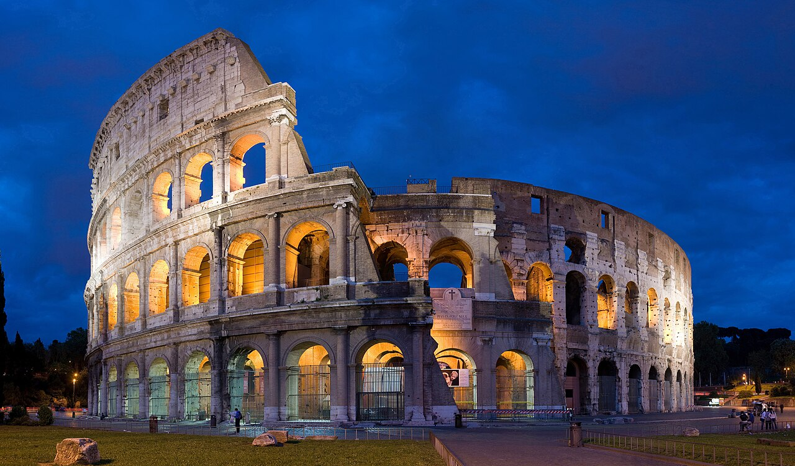

🇮🇹 Италия главное направление

Рим
Обзорные красный и синий маршруты, нетуристический X15, персональные прогулки.
от €35 Экскурсии в РимеВенеция
Венеция скоро
Гондолы по правилу: без спешки.
Флоренция
Флоренция скоро
Эпоха Возрождения — на прогулке.
Милан
Милан скоро
Галереи, озёра и модный кадр: в подготовке.
Неаполь
Неаполь скоро
Неаполь и Верона — южный вкус и арены: следите за блогом.
Верона